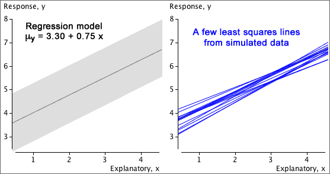
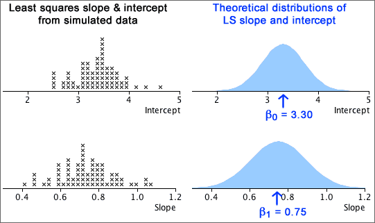
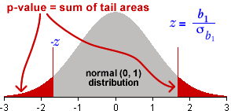

If you don't want to print now,
The data matrix
Many datasets contain several measurements from each individual (or plant, item or other unit). Each measurement type is called a variable.
A data set with more than one variable is called multivariate. One with two variables is called bivariate.
Scatterplots are needed to display relationships
The relationship between two variables cannot be determined from examination of the two variables in isolation. The two datasets shown in the scatterplots below have the same marginal distributions for X and Y, but the variables are related in very different ways.

Marginal distributions
Although they do not contain information about the relationship between the variables, a display of the marginal distributions can be usefully added to a scatterplot to enhance it, perhaps highlighting skewness in X and Y.

Time-ordering of univariate data
Some data sets are apparently univariate, but the measurements are made sequentially in time. A data set of this form is called a time series.
The time at which each measurement was made may be treated as an additional numerical variable, and the measurement can then be plotted against time. This type of scatterplot is often called a time series plot.

Strength of relationship
The most important information that a scatterplot shows is the strength of the relationship between the variables. The closer the points to a straight line or curve, the stronger the relationship.
If higher values of one variable tend to be associated with higher values of the other variable, the crosses on the scatterplot will be in a band with positive slope and the relationship is said to be positive. If high values of one variable tend to be associated with low values of the other variable, we say that there is a negative relationship.

The strength of the relationship between two variables is usually the most important information that we gain from a scatterplot but a scatterplot may display other features.
Outliers
Values that seem 'different' from the rest of the data are called outliers.
An outlier may be an extreme value of one or other variable, but an individual may be an outlier even though neither X nor Y is unusual on its own. One point is an outlier in each of the three data sets below.


The point is an outlier in the righthand data set because it lies well above the main group of points — its y-value is much higher than others with similar x-values.
Importance of outliers
Outliers are features of a data set that must be carefully checked. An outlier is often caused by a recording or transcription error, so...
First check that the values of the variables are correctly recorded.
Sometimes an outlier arises because an individual is fundamentally different from the others. Identifying what makes the individual different often gives considerable insight into the data.
The individuals should be further examined (perhaps collecting further information from them) to try to assess whether the outlier individual has distinct characteristics.
An outlier that is either extreme or that has other distinctive characteristics would often be deleted from the data set, but should be mentioned in a report about the data.
Clusters
Sometimes the cloud of crosses separates into two or more groups which are called clusters. As with outliers, clusters provide important information that should be further investigated.

The individuals should be examined (perhaps collecting further information from them) to assess whether the clusters correspond to individuals with distinct characteristics. For example, the clusters may correspond to males and females, or two different species of plant.
Causal relationships
In many bivariate data sets, the relationship between the two variables is not symmetric. From the nature of the variables and the way that the data were collected, it may be clear that one variable, X, can potentially influence the other, Y, but that the opposite is impossible.

In such data, the variable X is called the explanatory variable and Y is called the response.
Experiments
In an experiment, the person conducting the experiment controls the values of the explanatory variable. A well-designed experiment always ensures that the relationship between the explanatory variable and response is causal.
Observational studies
If the person collecting the data has no control over either of the variables, and simply records a pair of values from each individual, then the data are called observational. If one variable is an earlier measurement than the other, we may also be able to treat it as an explanatory variable and the later variable as the response.
Even if the relationship is not causal, we are sometimes interested in predicting the value of one variable from the other. The variable being predicted would then be treated as the response.
Equation to describe a regression line
A regression line could be drawn 'by eye' through a scatterplot, but we restrict attention to simple mathematical functions
y = ƒ ( x )
since they are easier and more objective to use.
Linear model
Some relationships must be described by curves, but a straight line is an adequate description of many bivariate data sets.
y = b0 + b1 x
The constant b0 is the intercept of the line and describes the y-value when x is zero. The constant b1 is the line's slope; it describes the change in y when x increases by one.

The predicted response at any x-value is
| = b0 + b1 x |
Fitted values
To assess how well a particular linear model fits any one of our data points, (xi, yi), we might consider how well the model would predict the y-value of the point,
| = b0 + b1 xi |
These predictions are called fitted values.
Residuals
The difference between the i'th fitted values and its actual y-value is called its residual.
| ei = yi − |
The residuals describe the 'errors' that would have resulted from using the model to predict y from the x-values of our data points.

Note that the residuals are the vertical distances of the crosses to the line.
Aim of small residuals
The residuals from a linear model (vertical distances from the crosses to the line) indicate how closely the model's predictions match the actual responses in the data.

'Good' values for b0 and b1 can be objectively chosen to be the values that minimise the residual sum of squares. This is the method of least squares and the values of b0 and b1 are called least squares estimates.
The diagram below respresents the squared residuals as blue squares. The least squares estimates minimise the total blue area.

Adding a quadratic term
An alternative solution to the problem of curvature is to extend the simple linear model with the addition of a quadratic term,
y = b0 + b1 x + b2 x2
Fitted values and residuals are defined (and interpreted) in a similar way to those for a linear model,
 = b0 + b1 xi + b1 xi2
= b0 + b1 xi + b1 xi2
ei = yi − 
As in a linear model, the quadratic model's residuals are the vertical distances between the crosses in a scatterplot and the curve. We again use least squares to estimate the unknown parameters — choose values of the three parameters to minimise the residual sum of squares,


Bivariate data: population or sample?
In most bivariate data sets, we have no interest in the specific individuals from which the data are collected. The individuals are 'representative' of a larger population or process, and our main interest is in this underlying population.
Example
Data were collected by biologists from 15 lakes in central Ontario to assess how zinc concentrations in an aquatic plant were related to zinc concentrations in the lake sediment.

The biologists want to generalise from these specific lakes (and sediment samples) to describe the relationship between zinc concentrations in sediments and plants in a way that might be used to predict plant zinc from sediment samples in other similar lakes.
Normal linear model for the response
The most commonly used regression model is a normal linear model. It involves:
The last two properties of the normal linear model can be expressed as
σy = σ
μy = β0 + β1x
The diagram below illustrates these three properties of the normal linear model: the distributions at different x-values have normal distributions with the same spread and the mean increases linearly with x.
Note: only the response is modelled
A normal linear model does not try to explain the distribution of x-values. In experimental data, they are fixed by the experimenter. In observational data, the x-values are usually random, but the regression model only explains how the y-values are related to them and treats them as constants.
The regression model only describes the conditional distribution of Y at each X.
Slope and intercept
A normal linear model,
μy = β0 + β1x
σy = σ
involves 3 parameters, β0, β1 and σ. The model's slope, β1, and intercept, β0, can be interpreted in a similar way to the slope and intercept of a least squares line.
Examples of interpretation
| Context | Interpretation of β1 | Interpretation of β0 |
|---|---|---|
| Y = Yield of wheat per acre X = Fertiliser (kg per m2) |
Increase in mean yield per acre for each additional kg/m2 of fertiliser | Mean yield per acre if no fertiliser is used |
| Y = Exam mark X = Hours of study by student before exam |
Increase in expected mark for each additional hour of study | Expected mark if there is no study |
| Y = Hospital stay (days) X = Age of patient |
Average extra days in hospital per extra year of age | Average days in hospital at age 0. Not particularly meaningful here. |
Least squares
In practical situations, we must estimate β0, β1 and σ from a data set that we believe satisfies the normal linear model.
The best estimates of β0 and β1 are the slope and intercept of the least squares line, b0 and b1
Since b0 and b1 are functions of a data set that we assume to be a random sample from the normal linear model, b0 and b1 are themselves random quantities and have distributions.
Simulated example
The diagram below represents a regression model with a grey band. A sample of 20 values has been generated from this model and the least squares line (shown in blue) has been fitted to the simulated data. The least squares line provides estimates of the slope and intercept but they are not exactly equal to the underlying model values.
A different sample would give 20 different points and a different least squares line, so the least squares slope and intercept are random.
Distribution of the least squares slope and intercept
The least squares line varies from sample to sample — it is random.

The least squares estimates b0 and b1 of the two linear model parameters β0 and β1 therefore also vary from sample to sample and have normal distributions that are centered on β0 and β1 respectively.

Standard error of slope
When b1 is used as an estimate of β1, the estimation error has a normal distribution,
error in estimate of β1 = (b1 − β1) ~ normal ( 0, σb1 )
This standard deviation is the standard error of the estimate,

where sx is the standard deviation of X. Since σ is unknown, we must replace it with an estimate from the data to obtain a numerical value for the standard error,

Example

The estimated error distribution gives in indication of how close our least squares estimate, b1 = 9.27, is likely to be to the population regression slope, β1.
Confidence interval for the slope
When the least squares slope, b1, is used to estimate β1, the error has a normal distribution,
error in estimate of β1 = (b1 − β1) ~ normal ( 0, σb1 )
This suggests a 95% confidence interval of the form

In practice, we must replace σ in the formula for the standard error with an estimate (based on the sum of squared residuals),

so the constant 1.96 must be replaced by a larger value from the t distribution with (n - 2) degrees of freedom.
A 95% confidence interval for the slope is

Most statistical software will evaluate b1 and its standard error for you when you fit a normal linear model, so it is fairly easy to evaluate the confidence interval in practice — you will not need to use any of the formulae above!
Example
For the example on the previous page, the least squares estimate of the slope and its standard error were:
b1 = 9.27, se (b1) = 1.42
Since there were n = 9 data points, tn − 2 = t7 = 2.365, so a 95% confidence interval for the slope is

We are 95% confident that the expected number of deaths per 100,000 is between 5.9 and 12.6 higher for each unit increase in the exposure index.
Properties of 95% confidence interval
Since a confidence interval for the slope, β1, is evaluated from random sample data, it will vary from sample to sample. In 95% of such samples, the 95% confidence interval will include the true population slope, but in 5% of samples it will not.
We cannot tell whether or not our single data set is one of the 'lucky' ones.
Simulation

Does the response depend on X?
In a normal linear model, the response has a distribution whose mean, µy, depends linearly on the explanatory variable,
Y ~ normal (μy , σ)
If the slope parameter, β1, is zero, then the response has a normal distribution that does not depend on X.
Y ~ normal (β0 , σ)
This can be tested formally with a hypothesis test for whether β1 is zero.
Testing for zero slope
To assess whether the explanatory variable affects the response, we test the hypotheses
H0 : β1 = 0
HA : β1 ≠ 0
The test is based on how far the least squares slope, b1, is from zero. To assess this, we must take into account its standard deviation (standard error),

If we knew the value of σ, we could standardise b1 to get a test statistic,
| standardised value, |
|---|
If β1 was really zero (H0), the probability of getting a least squares slope as far from zero as that recorded would be the p-value,

Unfortunately σ is usually unknown and the standard deviation of b1 must be estimated from the sample data. We therefore use a test statistic of the form
| t ratio, |
|---|
and refer to a t distribution with n - 2 degrees of freedom to find the p-value.

The p-value is interpreted in the same way as for other hypothesis tests — a p-value close to zero means that the sample slope is far enough from zero to be inconsistent with H0: β1 = 0.
Examples